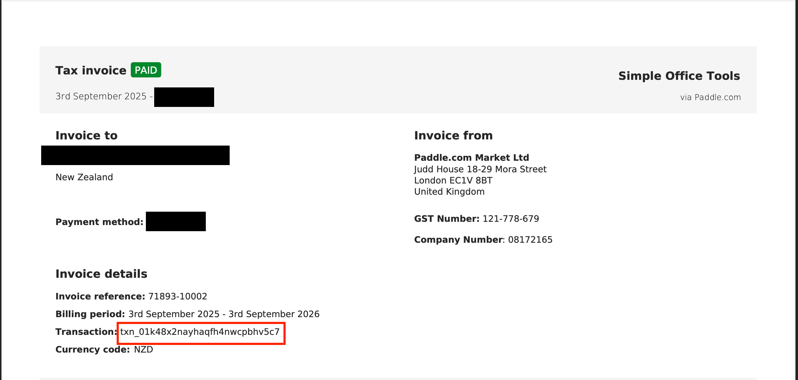

Where can I find my licence key?
After purchasing, an email was sent to the address you provided. It comes from help@paddle.com and includes your invoice as an attachment.
Your licence key is the Transaction ID shown on the invoice — it begins with txn_.
